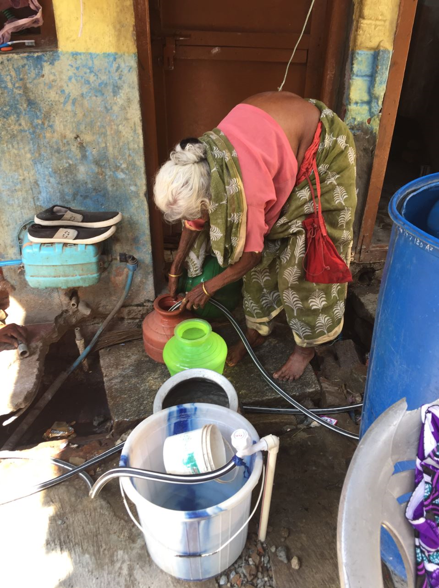
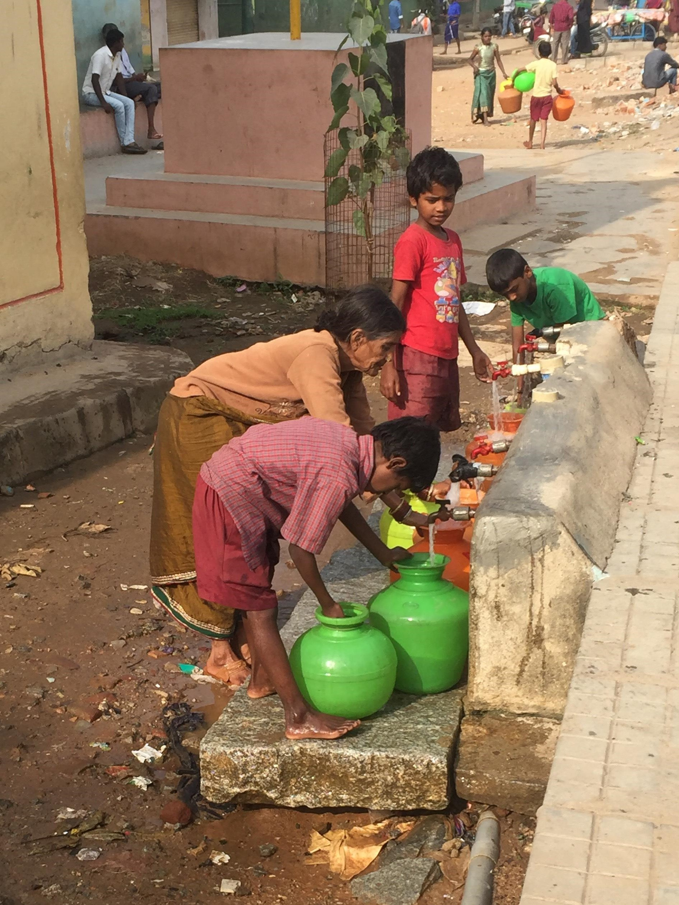

Wasser. Eine Selbstverständlichkeit?
Es gibt Menschen auf dieser Welt die auf ihren Schlaf verzichten müssen, da sie mitten in der Nacht mit Trinkwasser versorgt werden. Andere wiederrum investieren ihre kostbare Zeit, die sie in Bildung oder Arbeit nutzen könnten, um für ihre Familien genug Wasser zu besorgen. Müsste Wasser: die Quelle des Lebens, nicht für jeden Menschen gleich zugänglich sein? Warum ist dies nicht der Fall?
Wasser ist ein wesentliches Recht für den Menschen. Zudem steht heutzutage überall geschrieben, es sei gesund zwei bis drei Liter Wasser am Tag zu trinken. Es hält uns nicht nur am Leben, sondern versorgt uns auch mit wichtigen Mineralien und schenkt der Haut Feuchtigkeit. Daher scheint es uns selbstverständlich, jederzeit Zugang zu Trinkwasser zu haben. Dies ist allerdings nicht überall der Fall. Viele Länder haben mit Trinkwassermangel und vor allem mit einer schlecht geplanten Wasserversorgung zu kämpfen. Um diese Situation zu verbessern, wurde in vielen Ländern Lateinamerikas sowie in Südafrika und Indien, Wasser kommerzialisiert und sogar privatisiert. Dieser Wandel schadet vor allem der armen Bevölkerung die vorwiegend in Slums bzw. in unversorgten Randgebieten lebt. Diese leiden schon lange unter einer nicht existierenden beziehungsweise unzuverlässigen und unzureichenden Wasserversorgung. Welche negativen Auswirkungen sowohl die Kommerzialisierung als auch die Privatisierung auf die ärmere Bevölkerung hat, kann das Beispiel Bangalores zeigen: das Silikon-Valley Indiens.
Der Prozess der Kommerzialisierung und Privatisierung des Wassers in Indien hat seine Wurzeln in den 1980er Jahren. Zu dieser Zeit wurde ein neues wirtschaftliches Denken eingeführt. Ziel war es, die Volkswirtschaft des Landes attraktiv für den internationalen Handel und den Kapitalkreislauf zu machen. Um dies zu gewährleisten wurde der öffentliche und der soziale Sektor zum Großteil liberalisiert und privatisiert – dazu gehört die Wasserversorgung. Zusätzlich sollten Indiens Großstädte, nach dem Vorbild Singapores, in „Weltklassestädte“ verwandelt werden, um ausländische Investitionen anzuziehen und zu sichern. Diese sogenannten „Weltklassestädte“ können als Städte des modernen Kapitalismus mit einer hohen Produktionskapazität an Konsumgütern und einem Mangel an sichtbaren Zeichen der Armut identifiziert werden. Dadurch werden diese zu internationalen Reisezielen, sowie zu politischen, kulturellen und kommerziellen Zentren. So gesehen, klingt alles sehr positiv und zukunftsorientiert. Wie können also diese Veränderungen in Hinsicht auf die Infrastruktur und Grundversorgung der Bevölkerung schlecht sein?

Für die obere- und Mittelschicht sehen die Prognosen sicherlich rosig aus, doch für die ärmeren Bevölkerungsgruppen bedeutet dieser wirtschaftliche und urbane Wandel eine Verschlechterung ihrer prekären Lebenssituation. Dies liegt zum Beispiel daran, dass Projekte zum Bau von „Weltklassestädte“ Slumbewohner vertreiben sollen. Dadurch wird neues Land gewonnen, welches für Immobilienprojekte entwickelt und verkauft werden kann. Ebenso werden Projekte eingeführt, die eine 24 stündige Wasserversorgung garantieren sollen. Der letzte Punkt ist besonders problematisch für die städtische Wasser- und Sanitärversorgung, denn diese kommt mit der ansteigenden urbanen Einwohnerzahl nicht zurecht. Um diese Herausforderungen zu bewältigen, wurden Wasserreformen in den Jahren zwischen 1991 und 2000 eingeführt, die Raum für private Akteure schafften. Diese bekamen die Entscheidungsrechte auf Eigentum, Preisgestaltung, Nutzung und Erhaltung der natürlichen Ressourcen übertragen. Dadurch sollten die unzähligen Probleme des Wasserversorgungssektors kostengünstig wiederhergestellt werden. Dazu gehören gesetzliche Wassertarife, hohe Produktionskosten, hohe Systemverluste, defekte und nicht funktionierende Wasserrohre. Alle Hoffnungen wurden auf die Form der öffentlichen-privaten-Partnerschaft gesetzt, die eine Verbesserung der Kosteneffektivität durch Wettbewerb, technologische Verbesserungen sowie Preis- und Kostendeckung garantieren sollten. Als Folge dieser Maßnahme wurden die Wassertarife erhöht, wodurch die Einführung von Anschlussgebühren und die Marktanpassung der Wassergebühren erreicht werden sollten. Auf diese Weise fand ein Wechsel von einem angebotsorientierten zu einem nachfrageorientierten Ansatz in der Wasserversorgung statt. Wasser gilt nun nicht mehr als Grundrecht, sondern als Ware.
Parallel zu den landesweiten Wasserreformen starteten Bundesstaaten und Städte eigene Projekte zur Wasserversorgung. Ein Beispiel dafür ist Bangalore. Sie gehört zu den am schnellsten wachsenden Städte Indiens, welche eine neue Elite von gebildeten und jungen Arbeitern anlockt. Gründe dafür sind der exportgetriebene, kapitalintensive, sowie informations- und dienstleistungsorientierte Stadtwachstum. Aufgrund dieses schnellen Wachstums sah und sieht sich die Stadt immer noch ernsten Wasserproblemen gegenüber. Denn die Bevölkerung nimmt nicht nur im Allgemeinen zu, sondern auch dessen neue Elite, welche höhere Wasserverbrauchsgewohnheiten hat. Aus diesem Grund ist Bangalores Infrastruktur und Wasserversorgung nicht ausreichend um die Nachfrage zu decken.
Was sind eigentlich PPPs?
Unter PPPs ist eine vertraglich geregelte Zusammenarbeit zwischen Unternehmen und dem öffentlichen Sektor innerhalb einer Privatwirtschaft zu verstehen. Zu den Zielen einer solchen Zusammenarbeit, gehören die Arbeitsteilung von Aufgaben. Dabei übernimmt die PPP die Verantwortung für die effiziente Erstellung der Leistungen, während der öffentliche Sektor sich um die gemeinwohlorientierten Ziele kümmert. Die Partnerschaft mit der privaten Wirtschaft soll zur Entlastung der Haushalte führen, indem der private Unternehmer die Finanzierung sichert.
Eine der Maßnahmen, die Situation der städtischen Wasserversorgung zu verbessern, war die Privatisierung des Bangalore Water Supply and Sewerage Boards (BWSSB), die für die Wasserversorgung zuständige Behörde. Diese Maßnahme wurde ins Leben gerufen um die kommerziellen Kapazitäten des BWSSB zu verbessern. Eines der Ziele war es, Slums mit dem formellen Wassersektor zu verbinden und somit der ärmeren Bevölkerung eine bessere Wasserversorgung zu garantieren. Um sicher zu stellen, dass das Projekt funktioniert, wurden Ausschüsse gegründet, die für die Kommunikation zwischen den Slumbewohnern und dem Projektteam zuständig waren. Bei diesem Informationsaustausch ging es jedoch nicht darum die Slumbewohner darüber aufzuklären, dass das Projekt auch eine Erhöhung der Wassertarife und eine entgeltliche Selbstbeteiligung an die zu installierenden Wasserzähler mit sich bringen würde. Es ging nur darum, die Bewohner zu überzeugen dem Projekt zuzustimmen. Und so kam es wie es kommen musste: nur 5 Jahre nach Abschluss des Projektes, mussten einige Haushalte die installierten Wasserzähler abbauen, weil sie die monatlichen Gebühren nicht bezahlen konnten. Andere Haushalte wiederrum erhielten zu Beginn eine regelmäßige Wasserversorgung alle 2-3 Tage, diese wurde später auf alle paar Wochen reduziert, da Rechnungen nur alle paar Monate bezahlt werden konnten.
Aufgrund der resultierenden
Probleme, der aufsteigenden Unruhen unter der ärmeren Bevölkerung und
den Protesten vieler Menschenrechtsorganisationen und NGO’s, konnte in Bangalore die Privatisierung
des Wassers 2011 gestoppt werden. Leider hatte dies keine positiven Auswirkungen für die ärmere
Bevölkerung in den Slums, da der wirtschaftliche und urbane Wandel der letzten Jahre irreversible
Veränderungen mit sich gebracht hat. Dazu gehört die Kommerzialisierung des Wassers, welche zur
Schließung vieler öffentlicher Wasserhähne und zur Abschaffung des „Lifelinewater“ geführt hat. Damit
wird eine gewisse Menge an Wasser bezeichnet, die jedem Bürger kostenfrei zusteht. Dadurch sind alle
Bewohner Bangalores von der städtischen Wasserversorgung, die teurer geworden ist und von privaten
Anbietern abhängig.
Die meisten Slumbewohner besitzen auch heute noch keine eigene Wasserverbindung. Viele sind gezwungen bei Nachbarn mit entsprechender Anbindung Trinkwasser zu sammeln. Andere besitzen eine private Wasserleitung, werden jedoch nur alle zwei bis zehn Tage mit Trinkwasser versorgt und dies nur für einige Stunden - meist zwischen Mitternacht und sechs Uhr morgens. Es sind vorwiegend Frauen und Kinder die mit Plastikkrügen Trinkwasser sammeln gehen um dieses wiederrum in große Plastikkanister zu lagern. Aufgrund der Hitze und anderen wetterbedingten Umständen ist das Trinkwasser maximal sieben Tagen genießbar. Bewohner berichten, dass das gelieferte Wasser nicht ausreicht oder aufgrund beschädigter Rohre schmutzig ankommt. Weswegen viele Slum Bewohner dazu getrieben werden, Wasser von kaputten Wasserrohren illegal abzuzapfen oder Trinkwasser in 25 Liter Kanistern zu kaufen. Die Kanister schleppen sie dann teilweise kilometerweit nach Hause. Diese prekäre Situation führt zu Krankheiten, die auf den Wassermangel und die Wasserqualität zurückzuführen sind. Zuzüglich sehen sich viele Mütter gezwungen, Ihre Kinder nicht zur Schule zu schicken und zuhause zu halten damit diese Wasser sammeln, während die Mütter arbeiten. Andere wiederrum müssen die Nacht durchmachen um an Wasser zu kommen, da nie genau bekannt ist, wann es in der Nacht geliefert wird.
So gesehen, scheint die Lösung auf der Hand zu liegen. Zunächst sollten die zuständigen Behörden alle Haushalte mit privaten Wasseranschlüssen ausstatten, welche mindestens jeden zweiten Tag für eine bestimmte Zeit die Bewohner mit Trinkwasser versorgen. Als nächstes müssten die Versorgungsrohre saniert werden, um eine gute Trinkwasserqualität zu sichern. Und schließlich sollten nach dem Beispiel der Wassersteuer, welche für die ärmere Bevölkerung bezahlbar ist, niedrigere Wasserkosten dringend eingeführt werden. Doch der Lösungsansatz scheitert schon daran, dass sich das BWSSB weigert, Haushalte in Slums mit privaten Anschlüssen zu versorgen. Als Grund geben sie an, dass die Bewohner nicht zahlen würden.
Außerdem sieht sich die Behörde nicht dazu verpflichtet die Rohre zu überprüfen, da es kaum Beschwerden gibt. Dies liegt daran, dass sich die Mittel-und Oberschicht Wasserfilter leisten kann, die das ankommende schmutzige Trinkwasser reinigt. Zudem können die Wassertarife momentan nicht gesenkt werden, da weiterhin viele Investoren, Firmen und PPPs ihre Finger in der Wasserverwaltung haben. Schlussendlich liegt der Grund weshalb mögliche Lösungsvorschläge scheitern daran, dass Wasser kein Grundrecht mehr ist, sondern eine Ware von der profitiert werden kann. Die Frage ist nur: wer profitiert am Ende davon?
Das Thema des Trinkwassers und dessen Handhabung kann viele Aufschlüsse über die Wirtschafts- und Urbanpolitik eines Landes geben. Das Beispiel von Bangalore zeigt deutlich was passiert, wenn die Wasserversorgungspolitik und die damit verbundenen Projekte einer spekulativen, profitorientierten Urbanisierung zum Opfer fallen. Dabei waren die Projekte ursprünglich als Hilfe für die Armen gedacht. Doch tatsächlich wird die ärmere Bevölkerung indirekt und still von den städtischen Diensten ausgeschlossen. Dadurch können die neuen erstrebten „Weltklassenstädte“ zum Wohnort neuer Eliten werden. Sie sind ja nun frei von sichtbarer Armut. Solche „Weltklassenstädte“ werden in Indien zum Teil als Vorwand benutzt, verschiedene Arten von öffentlich-privaten-Partnerschaften zu genehmigen und Megaprojekte zu rechtfertige. Ohne Rücksicht darauf, wie sich solche Projekte auf die ärmere Bevölkerung auswirken. Deshalb ist es entscheidend für die Zukunft Indiens, denjenigen Gehör zu verschaffen, die nicht gehört werden. Auf diese Weise kann die politische und neoliberale wirtschaftliche Richtung des Landes umgeleitet werden. Und sei es nur, indem die Wasserproblematik thematisiert wird.